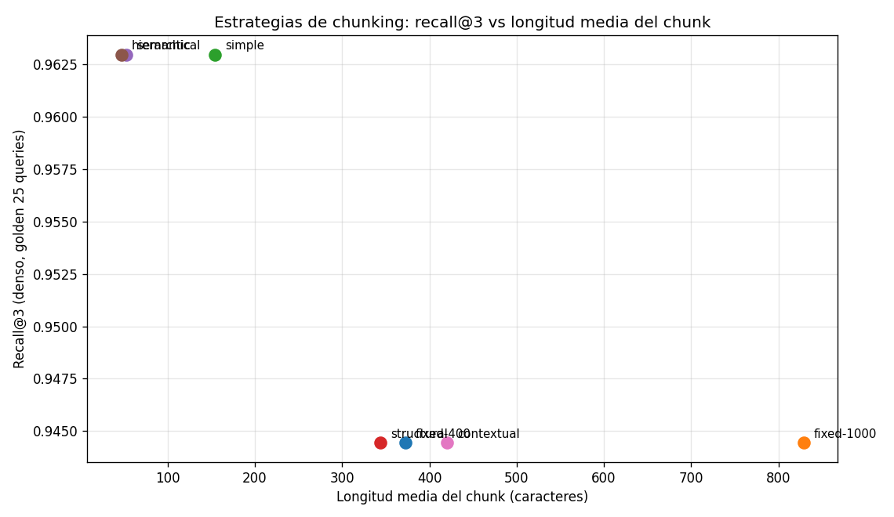

04 — Chunking serio para documentos legales largos¶
La decisión silenciosa¶
Los retrievers de las secciones 1-3 trabajan sobre chunks, no sobre documentos. Eso significa que toda la calidad de tu sistema RAG depende, antes que de cualquier modelo, de una decisión que casi nadie discute: cómo cortar el documento. Un chunk demasiado chico no tiene contexto suficiente; uno demasiado grande mezcla temas y diluye el match. Un chunk que parte una tabla la destruye; uno que parte un artículo legal lo deja sin antecedente. Si un término no cabe en un chunk indexable, no se puede recuperar — punto, da igual qué tan bueno sea tu BM25 o tu embedder.
Analogía económica. Chunking es decidir la unidad de análisis antes de estimar nada. Si analizas inflación con datos mensuales ves cosas que con datos trimestrales desaparecen, y viceversa: ninguna de las dos elecciones es neutra. Lo mismo aquí: la unidad de chunkeo define qué hipótesis (qué queries) puedes responder y cuáles quedan estructuralmente fuera del alcance.
El trade-off central: precisión vs contexto¶
graph LR
subgraph "Chunks chicos"
A1["sentencia / 50 chars"] -->|"match preciso"| A2["alta recall@k"]
A1 -->|"poco contexto"| A3["generador descontextualizado"]
end
subgraph "Chunks grandes"
B1["artículo / 1000 chars"] -->|"contexto rico"| B2["respuesta completa"]
B1 -->|"señal diluida"| B3["match menos preciso"]
endCuanto más chico el chunk, más precisa la coincidencia (cada chunk es una unidad temática estrecha que matchea o no matchea limpiamente), pero menos contexto lleva al generador. Cuanto más grande, lo opuesto. Las cinco estrategias siguientes son distintos puntos de esa frontera, más una sexta (jerárquica) que intenta tener las dos cosas a la vez.
Cinco estrategias, implementadas en retrieval_lib¶
1. Fixed-size (ventana deslizante)¶
El más ingenuo: corta cada N caracteres con solape O. No respeta nada: parte artículos, oraciones, tablas, donde caiga. Es la elección de defecto cuando no hay estructura confiable o cuando no quieres invertir tiempo en la decisión.
Hiperparámetros: size (típico 200-1000), overlap (10-20% del size) para que
ningún hecho quede partido sin redundancia.
2. Simple (línea en blanco)¶
Lo que veníamos usando. Aprovecha que los documentos legales chilenos tienen párrafos visualmente separados. Es un proxy barato de estructura.
3. Structural (por encabezados del dominio)¶
Detecta encabezados específicos del español jurídico chileno —Artículo Nº,
Glosa N:, TÍTULO, PÁRRAFO, CAPÍTULO, numerales romanos— y agrupa todo
el texto bajo cada encabezado en un solo chunk. Un artículo completo queda
indivisible; una glosa entera también.
Ventaja: la unidad recuperada es la unidad citable ("Artículo 3º del decreto 1.423"). Costo: chunks más largos y con menor poder de discriminación.
4. Semantic (donde el coseno cae)¶
Parte el texto en oraciones, embebe cada una, y empieza un nuevo chunk cuando el coseno entre oraciones consecutivas cae bajo un umbral. Idea: mantener juntas oraciones que hablan de lo mismo, separar al cambio de tema.
Requiere embeddings de oraciones (costo extra) y elegir threshold. Demasiado
alto → fragmenta de más; demasiado bajo → no fragmenta.
5. Hierarchical (parent / child)¶
Combina dos granos. Los hijos son chunks chicos (en nuestra implementación, oraciones); los padres son los bloques estructurales que los contienen. Indexas y recuperas por hijo (precisión); devuelves el padre al generador (contexto).
Es el patrón con mejor relación precisión-contexto en la práctica. Su talón de Aquiles aparece cuando el hijo matchea por sentido pero el padre no es el correcto (lo veremos en los números).
6. Late chunking — y lo que SÍ podemos hacer¶
True late chunking (Günther et al., 2024) embebe el documento entero con
un encoder de contexto largo y luego hace mean-pool de los embeddings
token-level sobre el rango de cada chunk. El resultado: la representación de
cada chunk "vio" el documento completo al codificarse. Es atractivo para
docs legales donde una glosa al final tiene sentido por el título al inicio.
Lo que no podemos hacer aquí: la API de OpenAI Embeddings devuelve un vector por input, no token-level. Esa es la barrera técnica. Late chunking real requiere un encoder local (Jina v2/v3, BGE-M3) con acceso al pooling.
Lo que sí podemos hacer: la técnica de Anthropic (2024) llamada contextual
chunking ataca el mismo problema (chunks descontextualizados) desde otro
ángulo: a cada chunk se le prepone una descripción del documento antes de
embeberlo. Es compatible con cualquier embedder. Lo implementamos en
contextual_chunk y aparece como una fila más en los números.
Los números, sobre el corpus¶
Recall@k denso por estrategia (golden, 25 queries con fuente):
| Estrategia | nº chunks | avg chars | @1 | @3 | @5 |
|---|---|---|---|---|---|
| fixed-400 | 111 | 372 | 0.833 | 0.944 | 0.963 |
| fixed-1000 | 48 | 829 | 0.907 | 0.944 | 0.981 |
| simple | 234 | 154 | 0.796 | 0.963 | 0.963 |
| structural | 106 | 344 | 0.907 | 0.944 | 0.963 |
| semantic | 666 | 52 | 0.815 | 0.963 | 0.981 |
| hierarchical | 740 | 47 | 0.852 | 0.963 | 0.981 |
| contextual | 106 | 420 | 0.907 | 0.944 | 0.963 |

Lecturas honestas:
- Hay dos grupos claros. Estrategias de chunk grande (
fixed-1000,structural,contextual) ganan en@1(0.907) pero se quedan en 0.944 en@3. Estrategias de chunk chico (simple,semantic,hierarchical) ganan en@3y@5(hasta 0.981) pero pierden en@1. Es el trade-off del comienzo, en números. - Contextual chunking no movió la aguja aquí. En este corpus chico y con golden mayoritariamente dentro de un solo doc, prefijar el doc no aporta. Su beneficio documentado en la literatura aparece en queries cross-doc y con chunks que pierden referente — lo veremos mejor cuando construyamos el golden a nivel chunk en §8.
- El recall@3 está cerca de techo en todas (0.94–0.96). Como en §3, hay efecto techo: la mayoría de queries del golden se resuelven independiente de la estrategia de chunkeo. Para discriminar de verdad necesitamos métricas a nivel chunk con expected_chunks como ground truth (§8).
Por qué los números no cuentan toda la historia¶
Recall@k a nivel doc dice "el doc correcto está en el top-k", pero no "el chunk devuelto contiene la respuesta". Esto último depende fuertemente de la estrategia. Misma query, "¿Cuántas USE recibe un alumno prioritario de 3º básico?" (respuesta: 1.694 USE), top-1 de cada estrategia:
| Estrategia | Contiene "1.694 USE" | Qué devuelve |
|---|---|---|
| fixed-400 | ✓ | Fragmento que parte a media palabra pero incluye los rates |
| fixed-1000 | ✓ | Ventana grande con todos los rates por nivel |
| simple | ✓ | Bloque limpio con la lista completa |
| structural | ✗ | Artículo 1º (procedimiento), no Artículo 3 (rates) |
| semantic | ✓ | Lista de rates como un bloque semántico |
| hierarchical | ✗ | Oración "b) 7º y 8º básico: 1.130 USE" — tramo equivocado |
| contextual | ✗ | Artículo 2º (criterios JUNAEB), no el de rates |
hierarchical falló de forma instructiva: la oración correcta dice "1º a 6º
básico" y la incorrecta dice "7º y 8º básico". Para el embedder son
semánticamente casi idénticas (ambas listan tramos escolares con valores USE),
y eligió la equivocada. El embedder no hace aritmética: no entiende que 3º
está en [1º, 6º]. Esto es la brecha de la sección 2 (denso vs siglas/números),
reaparecida a nivel chunk.
Pero hierarchical brilla cuando devolvemos el padre. Query "declarar el IVA
dentro de los primeros 20 días del mes siguiente":
HIJO (indexado, matchea): 60 chars
"b) Declarar y pagar trimestralmente el IVA devengado, dentro"
PADRE (devuelto al generador): 633 chars
IV. OBLIGACIONES DEL PRESTADOR EXTRANJERO
Los prestadores de servicios digitales domiciliados o residentes
en el extranjero deberán:
a) Registrarse ante el Servicio de Impuestos Internos...
b) Declarar y pagar trimestralmente el IVA devengado, dentro
de los primeros 20 días del mes siguiente al término del
trimestre respectivo.
c) Emitir un comprobante de pago al usuario por cada transacción...
El hijo da precisión de match; el padre da contexto completo (todas las obligaciones del artículo IV, no solo la trimestral). Es el patrón "small to big retrieval" del estado del arte.
¿Qué chunking usar? Un árbol de decisión honesto¶
graph TD
Q1{"¿Documentos<br/>con estructura<br/>jurídica clara?"}
Q1 -->|"Sí (decretos, leyes, glosas)"| Q2{"¿El generador<br/>necesita el<br/>artículo entero?"}
Q1 -->|"No (PDFs OCR, texto sucio)"| FIX["fixed-size<br/>(400-800 chars,<br/>overlap 10-20%)"]
Q2 -->|"Sí (responde con citas legales)"| HIER["hierarchical<br/>(child=oración,<br/>parent=artículo)"]
Q2 -->|"No (respuestas cortas)"| Q3{"¿Vale la pena<br/>el costo extra<br/>de embedder?"}
Q3 -->|"Sí"| SEM["semantic<br/>(threshold 0.5-0.6)"]
Q3 -->|"No"| STR["structural<br/>(por encabezados)"]
style HIER fill:#bdf,stroke:#333,color:#1a1a1aDefaults para corpus regulatorio chileno: empieza con hierarchical; si el
costo de embedder es prohibitivo, cae a structural; si los docs vienen de
OCR sucio sin encabezados confiables, fixed-400 con overlap 50. Evita
semantic con threshold agresivo (≥0.7) en este dominio: el español jurídico
repite tanto formato que parte de más.
Estado del arte¶
| Aspecto | Estado | Detalle |
|---|---|---|
| Fixed-size como default | ✅ Funcional | Funciona "bastante bien" en RAG genérico; rara vez óptimo en dominios estructurados |
| Hierarchical / small-to-big | ✅ Patrón dominante | Estándar de facto en 2026 cuando hay estructura |
| Semantic chunking | 🟡 Caso a caso | Útil en docs sin estructura visible; sensible al threshold |
| Late chunking real | 🟡 En adopción | Requiere encoder con token embeddings (Jina v2/v3, BGE-M3); gran promesa, integración lenta |
| Contextual chunking (Anthropic) | ✅ Producción | Compatible con cualquier embedder; costo: 1 LLM call por chunk al indexar |
| Chunking de tablas en PDFs | 🔴 Sin solución estándar | Sección 9 le dedica espacio explícito |
Conexiones¶
- Sección 1 y 2: las ventajas de BM25 (saturación, normalización por longitud) y la geometría densa dependen del tamaño de la unidad indexable. Los números de §1 (chunks de 15 tokens) y §2 (mismos chunks) son una elección de chunking entre muchas.
- Sección 3 (hybrid): el techo de recall@3 que vimos (≈0.96) sigue acá. La fusión y el chunking no se sustituyen; se combinan.
- Sección 6 (reranking): las fallas de
hierarchical("7º y 8º básico" en vez de "1º a 6º") son exactamente lo que un cross-encoder corrige al reordenar el top-k del retriever. - Sección 8 (evaluación): el efecto techo de recall@k a nivel doc invita a construir ground truth a nivel chunk. Lo hacemos ahí.
- Sección 9 (casos límite): chunking de tablas en PDFs queda explícito como caso límite del dominio; aquí lo dejamos planteado.